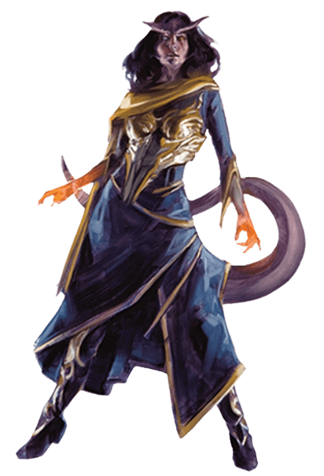

Eligiendo tu Raza: a tener en cuenta
Tu elección de raza afecta muchos aspectos diferentes de tu personaje y estableces cualidades fundamentales que existen durante toda tu carrera como aventurero. Antes de tomar una decisión, hay que tener en mente el tipo de personaje con el que quieres jugar.
La raza no solo afectará a tus puntuaciones de característica y rasgo, sino que también poporcionará las indicaciones para construir la historia de tu personaje
Aquí encontrarás información que te ayudará a interpretar tu personaje, como personalidad, apariencia física, rasgos de sociedad y tendencias de alineamiento para dicha raza. Si bien estos detalles ayudan a pensar sobre tu personaje, puedes desviarte ampliamente de la pauta de tu raza.
Raza Enano
Raza Elfo

Raza Mediano

Raza Humano

Raza Dracónido

Raza Gnomo
Raza Semielfo
Raza Semiorco

Raza Tiflin
